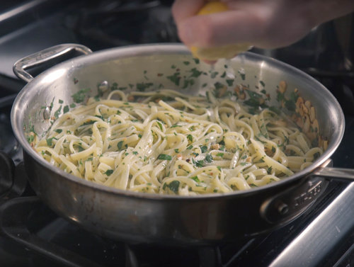

Olive Oil Pasta

Description
What dish can make any man or woman ache for the touch of Jon Favreau? Pasta Aglio e Olio (Olive Oil Pasta) is the dreamy midnight snack that lives up to its porny portrayal in the foodie-comedy-drama "Chef."
Ingredients
- 1/2 head garlic, separated and peeled
- 1/2 cup flat-leaf parsley, rinsed and finely chopped
- 1/2 cup good quality olive oil
- 1 tsp red pepper flakes
- 1/2 pound dry linguine
- 1/2 lemon
- Salt and pepper to taste
Recipe
- Heavily salt a large pot of water, and bring to a boil. Cook pasta until slightly underdone while completing the steps below.
- Slice the garlic cloves thinly, and set aside. Heat olive oil in a large sauté pan over medium heat until barely shimmering. Add sliced garlic, stirring constantly, until softened and turning golden on the edges. Add the red pepper flakes and lower the heat to medium-low.
- Add the pasta, drained, with about 1/4 cup reserved pasta cooking water. Squeeze lemon juice over top, and mix into the pasta with the fresh parsley. If sauce is too watery, continue to cook for 1-3 minutes, until pasta has absorbed more liquid. Season with salt and pepper, and serve.